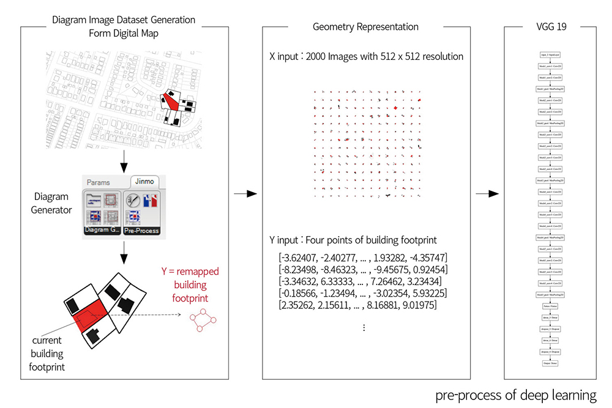
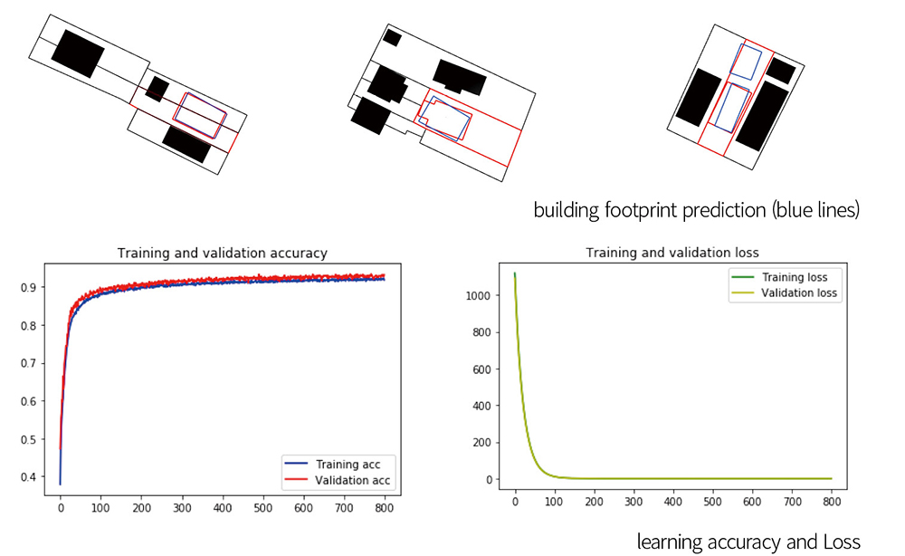
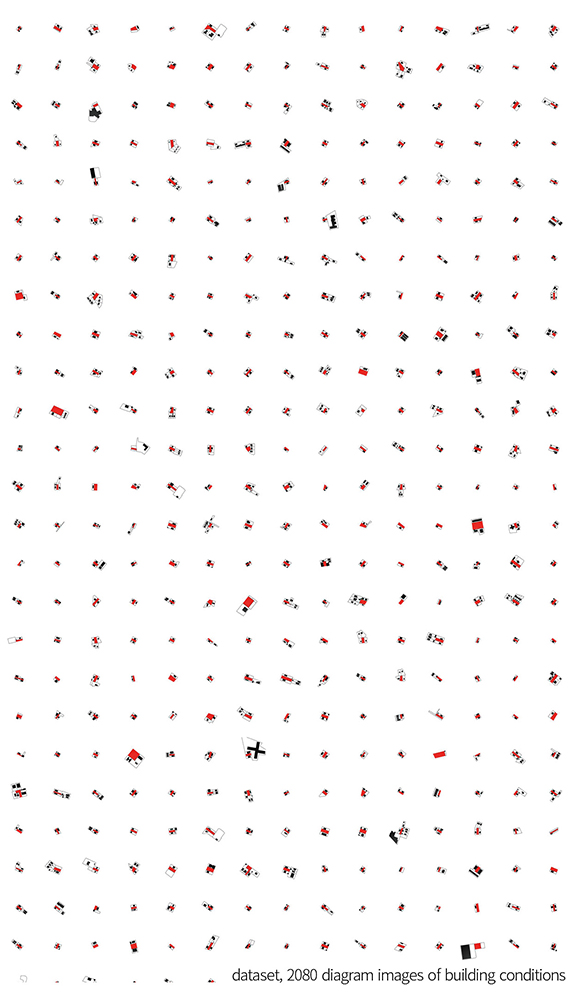

This project is analysis and generation of typology of building footprint in East Liberty and Shadyside in Pittsburgh. Deep learning techniques not only statistically processed geoemtries but also the their relationships. Extracting the target building footrpint and its neightbor buildings footprint with lot boundaries, diagram image dataset of each target building was created. The dataset was amplified by augmentation skills with the small angle rotation. Deep learning model was trained by images and four points of buidling foot prints. After training, deep learning model has features of building footprint geometry with given context, such as neighbor building layout and occuppancy. This research can be a mileston of architecture with AI, accurately and newly analyzing the typicality of houses' footprint. Furthermore, this aspects can be expanded to investigate typical conditions or typology of building morphology of specific cities.

Rule-based models, such as Shape Grammar, L-systems and Cellular Automata, are used to capture the formation logic of pre-existing or desired urban types and settlements (see, for example, Ena 2018; Parish and Müller 2001; Hillier and Hanson 1984). In this case, the elements of the context not only can be generated but also embedded in the logic of the generative process, influencing the formation of buildings. However, the bottleneck in these studies is that the rules for the formation are interpreted, formalized and evaluated by an expert, relying exclusively on her access to information and personal biases. Currently, with the availability of GIS data for cities and new learning techniques, it becomes possible to investigate the influence of the context in architecture beyond the limits of previous CAAD approaches. In this sense, our research team developed an ‘Occupancy Model’ to represent the two-dimensional geometrical relationship between a building and its adjacent buildings with their parcels. More specifically, it uses a deep-neural network to predict building footprints, based on a dataset of urban parcels of Pittsburgh.

For the representation of the parcel and context information in our data set, we employed raster graphics Raster graphics data is appropriate to represent various models of occupancy, within a standardized information format. In other words, by setting up a fixed image size, all different shape information of the urban site can be encoded in high-dimension vectors with the same shape. Instead of using satellite images, we generated our own Diagrammatic Image Dataset (DID) which is a data set comprising raster images that contain information in the form of diagrams. It can be used to illustrate relationships in architecture and urbanism. DID has two advantages over datasets of photos. The first advantage is reduction of noise. A diagrammatic image can show the desired relationships in isolation without irrelevant information. Another advantage is customization. With diagrammatic image dataset, designers can define what they want to analyze by excluding or including the elements they want to focus on. Using this data set, the patterns or features of relationships that appear in diagrams can be investigated, extracted, and analyzed through statistical methods.
We used Geographic Information System (GIS) data provided by Allegheny county to get the information of building footprints and geometries of parcels. After importing .shp files in ArcGIS, we set an area covering about 1.5km around Pittsburgh at an intersection where several neighborhoods meet. This range of the site includes 7598 buildings and 8459 parcels. After converting the building footprints and parcel geometries into .dwg files, Rhinoceros and Grasshopper were used to import those files and generates DID of occupancy model. For the diagrammatic images the process required setting a diagram drawing style by adjusting line weights or colors for the geometry. This style is customized by user intention for purposes such as the research described here. Here, target parcels were filled in solid red, and neighboring buildings filled in solid black. Neighbor parcels were assigned black and set to 2px wide.

Customized components in Grasshopper were created to generate DID of occupancy model. There are four main components. The first, ‘Detector,’ distinguishes the target building and parcel from surrounding buildings and parcels. The ‘Conditions’ component determines whether the target building and parcel can be recorded as an image by given conditions and outputs a Boolean value. For example, For example, a huge building footprint is out of image range, in this case, the component returns ‘False’ meaning it is ‘not suitable for DID,’ and ‘True,’ otherwise. The ‘DI Generator’ component generates a diagrammatic image focusing on current target building within a specific image size and range. . The last component, ‘DI labels,’ records a vector by an image. In this research, the labels of images are the normalized coordinates of vertices of building footprints. Owing to the fact that the building footprints can take on various shapes, their number of vertices are different – this means that the dimension of label vectors cannot be fixed. Therefore, the footprint shapes were approximated into a quadrangular geometry comprising four two-dimensional points. With this approximation, all label vectors have length eight.
We assumed that the relations between context and footprint in Pittsburgh are weakly correlated with orientation. Therefore, in order to improve learning, we augmented the data set by rotating of sample images. The original building images and labels were rotated 3 degrees apart 8 times into counter-clockwise. In total, 18,720 images derived from 2,080 original images by this image augmentation method.
We adopted Visual Geometry Group 19 (VGG19, Simonyan and Zisserman 2014), a deep convolutional network for object recognition developed and trained by the University of Oxford. We complied the model with SGD (Stochastic Gradient Descent) optimizer, MSE (Mean Squared Error) loss function, and 0.00005 learning rate. Batch size was 64 for 800 epochs for learning. We tested this model with different dataset by diagram styles and the number of images. In final learning, the model shows 94.47% of training accuracy and 93.14% validation accuracy.
With this trained model, un-figured images were given to predict the building footprints considering the given surrounding buildings and parcels. We remapped the predicted footprints on the target parcel and compared the similarity with the original target building by considering the overlapping area and difference of vertices positions. The best predicted footprint had 98% similarity with the original target buildings. However, when there are more than one target building in a parcel, it shows only one building footprint with 81% similarity.